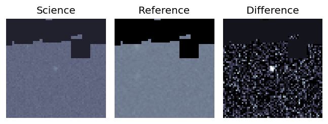

Candidate List 20251010Previous Day Next Day
Section 1: New Sources (age<1d) Section 2: Old (1-5d) sources observed last nightplaceholder
Section 1: New Afterglow/FBOT Cands Last Night (0)
Section 2: Older Sources Observed Last Night (1)
0. ZTF25abvqhna (FBOT?) [Back to Top] [Share] [Trigger Swift] [Fritz] [Lasair]RA, Dec: 134.15439, 56.70294 8h56m37.05s, 56d42m10.59sGalactic (l, b): 160.31894, 39.41405 ext(g-r) = 0.03

TESS: Sectors [20 47 74]
PS1: 0 sources in 3 arcsec
LegacySurvey: 1 sources in 3 arcsec Closest: d = 0.65 arcsec, 75.1 deg (east of north) photoz=0.55 (68% bounds 0.3, 0.91), type=REX peak abs mag = -23.1 (68% bounds -21.55, -24.45)

Extinction-corrected gr color:
From alerts: -0.41 +/- 0.31 mag
Rise Rate:
g: 0.23 mag/day
r: 0.18 mag/day
i: -99 mag/day
Fade Rate:
g: -99 mag/day
r: -99 mag/day
i: -99 mag/day